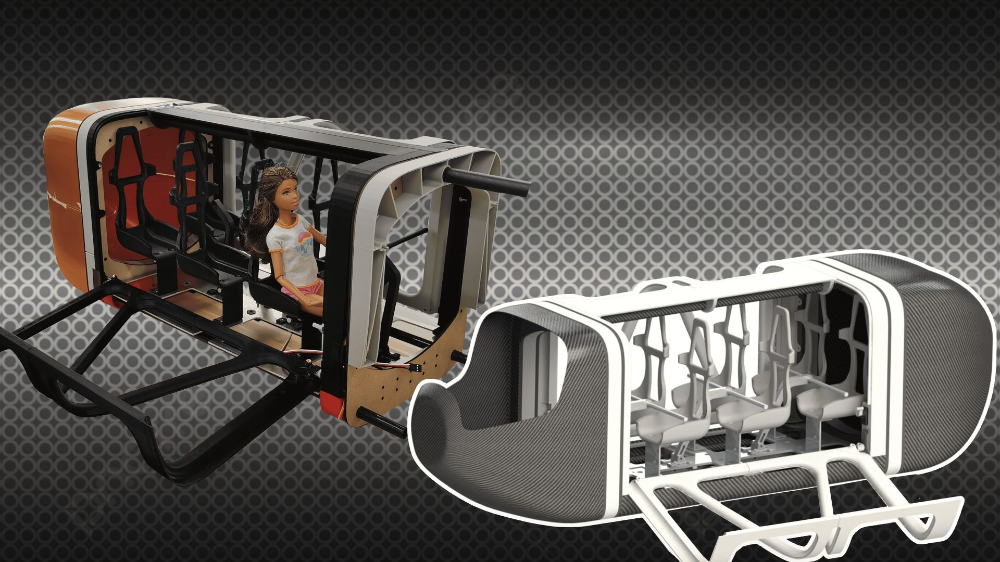
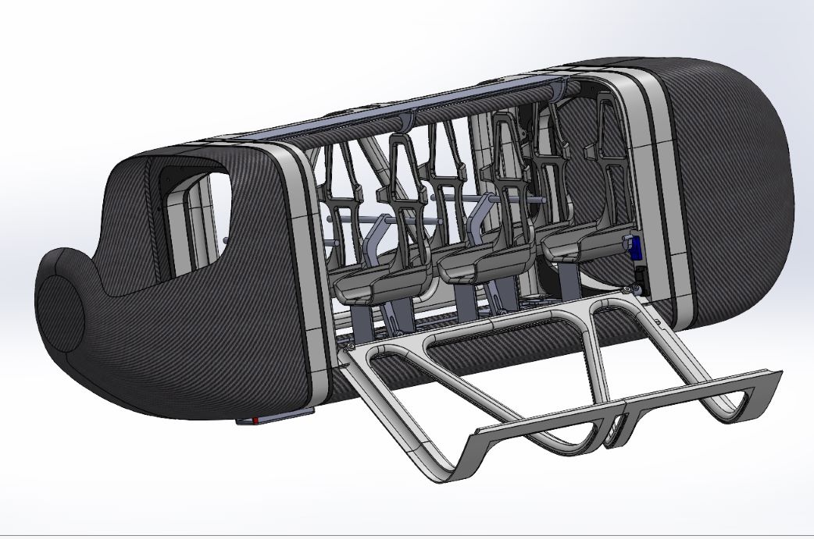
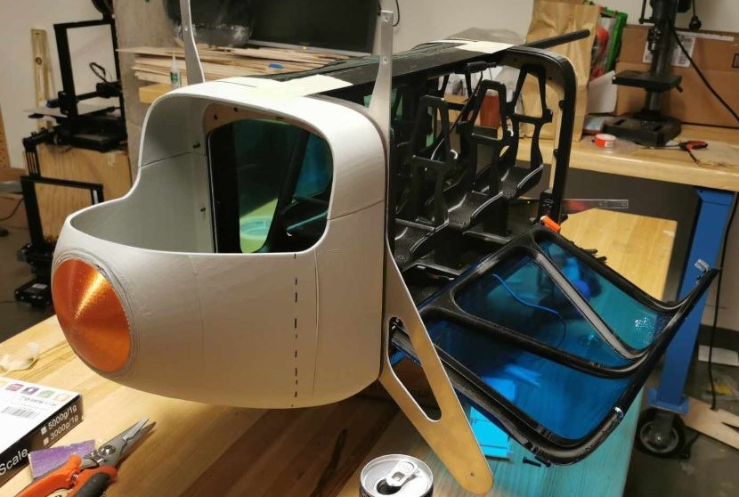
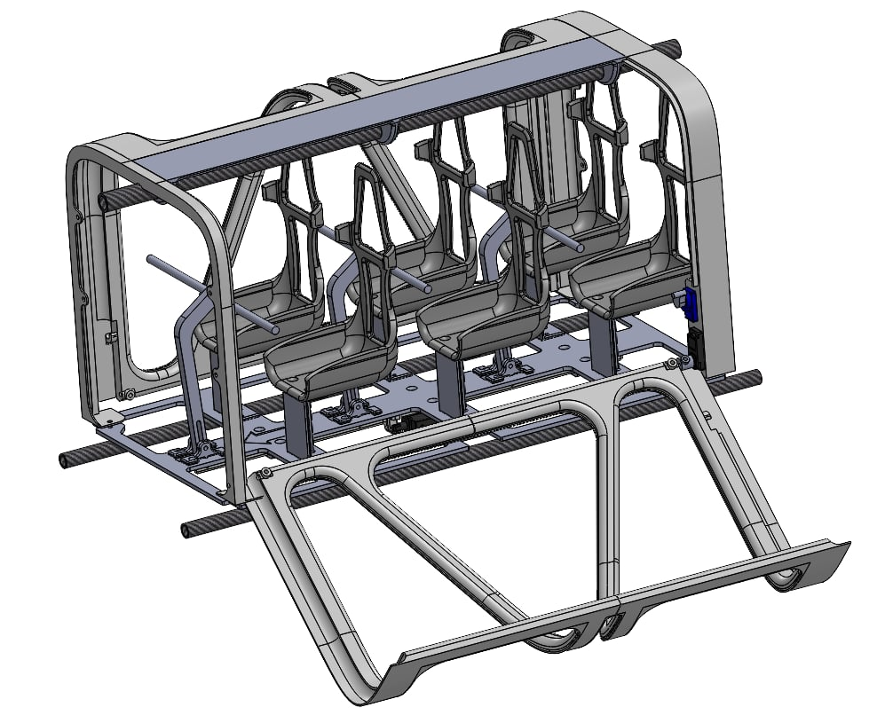
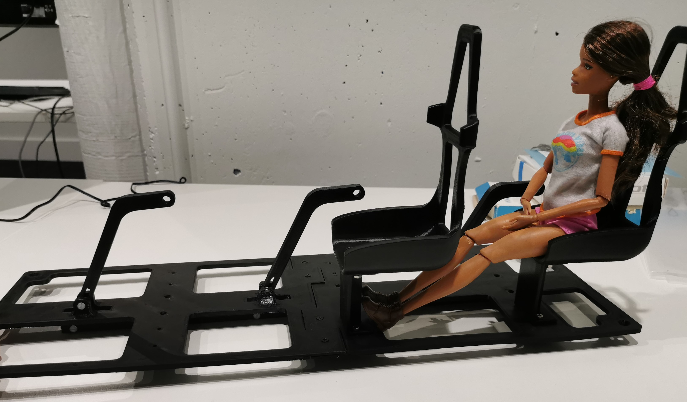
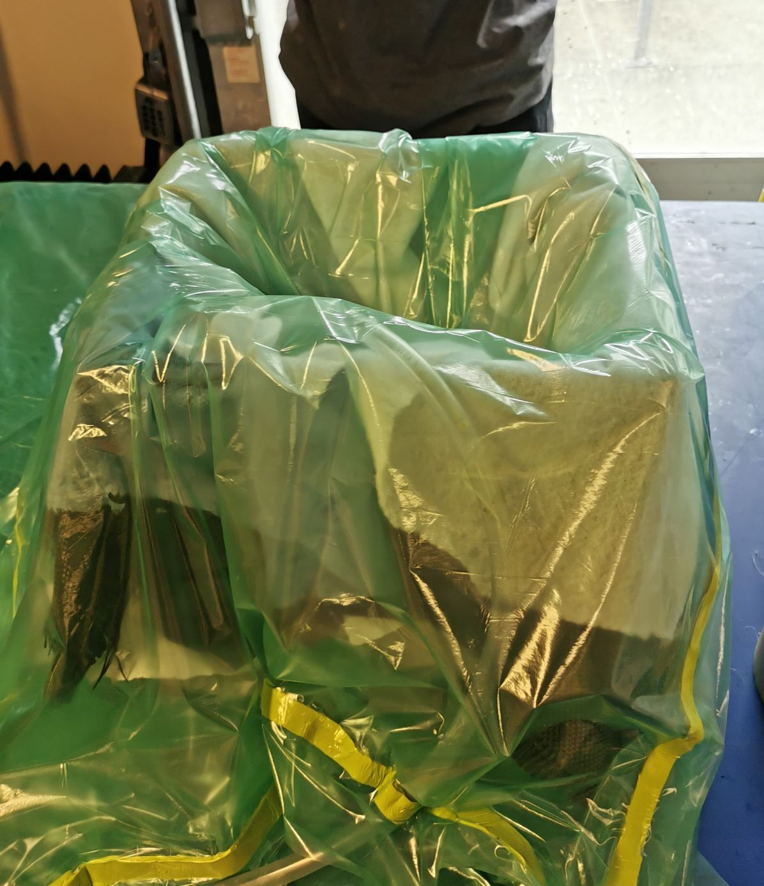
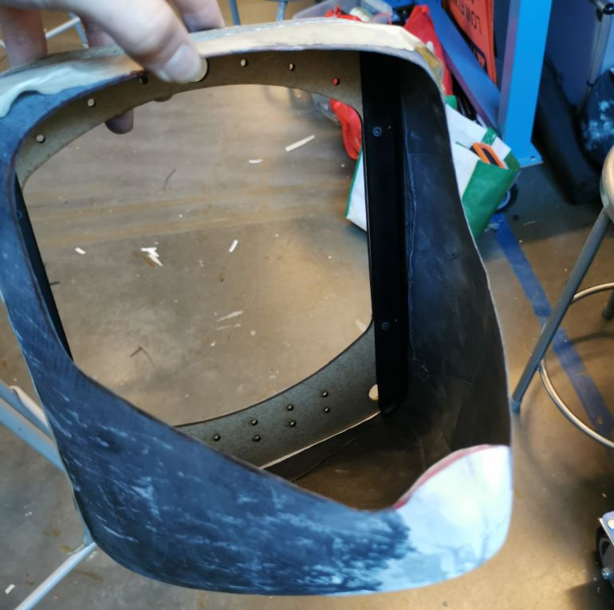
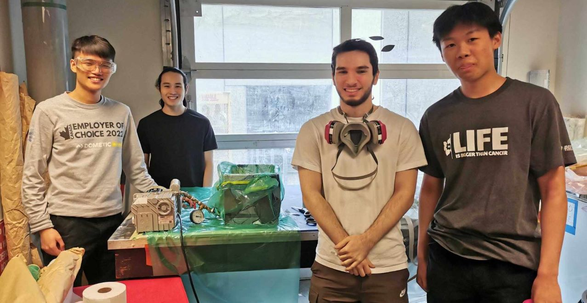
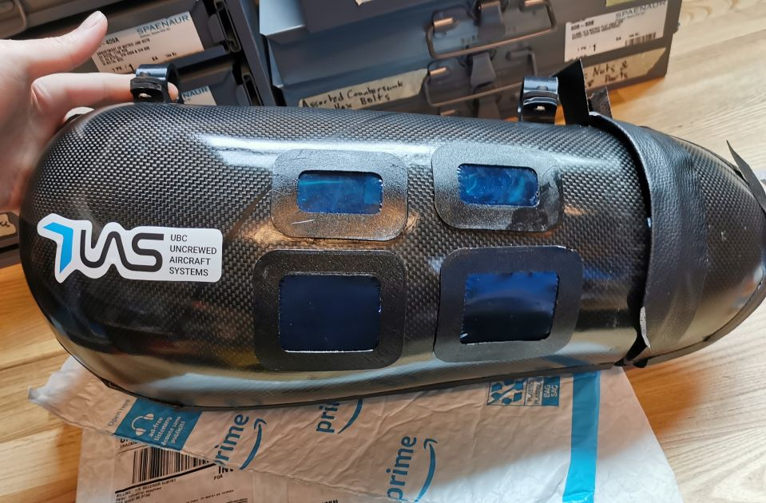

UBC Uncrewed Aircraft Systems (UAS) participates in two annual aircraft design competitions. For the Aerial Evolution Association of Canada (AEAC) national student conference, university teams were tasked with designing a ‘realistic’ scaled down air transportation system, which would transport passengers (Barbie dolls) through a variety of missions.
- I was one of the leads for the cabin mechanical team, overseeing the cabin architecture, entryway and seating design, and the integration between all components.
- I led a group of 10 students through the ideation process, using engineering knowledge and DFMA principles to guide design decisions.
- I also worked on creating a lightweight seating mechanism to securely fasten passengers making use of pin and slot mechanics.

- Carbon fibre semi-monocoque reduces weight by 67% over PLA
- Modular cabin design allows swapping of the nose, body, and tail of the fuselage with relative ease for maintenance
- Surface modeled seating custom sized for comfortability, while actuator controlled seating bar automatically secures passengers during flight

Entry & Seating:
After brainstorming with my team, we opted to use downwards-folding gull-wing doors to maximize free space, using monokote for lightweight windows and embedding the electronics into the structural framing. The seating was modeled off of bucket seats to add protection for our doll passengers, using solid and surface modeling techniques to achieve sleek curvature.

For the seating part of the project, I worked on the securement mechanism — a six-seat lapbar mechanism using a pin-in-slot design to convert the straight motion of a linear actuator into rotational movement. The floor was waterjet cut from 1/16” aluminum, which when combined with the ribs of the fuselage, provided a rigid platform to secure the cabin infrastructure.

Cabin Architecture:
For the cabin design, I started by running a workshop with my co-lead on surface modeling techniques. We ran through the various surfacing tools, as well as the usage of splines in 2 and 3-dimensional sketches to achieve G3 curvature. Once the initial design for the fuselage was completed, we moved into using CFD to validate our geometry, and tested a 3D printed model in a wind tunnel to analyze aerodynamics.

Once all parameters were finalized, we moved to mold design and layup prep. This involved 3D printing our molds in 4 sections, then adhering, priming, coating, and sanding them smooth. We opted to do a wet layup instead of using pre-preg carbon fibre, so CF cloth was laid and coated with resin until achieving our desired thickness. Finally, a vacuum was pulled over allowing our part to cure before demolding.

I was able to help guide UBC UAS’s first ever carbon-fibre semi-monocoque, as well as demonstrate the cabin integration successfully. Each part of the control system was able to automate the entire takeoff and landing securement procedures sequentially from entryway, to seating, lights, and infotainment.
Unfortunately, due to circumstances outside of our team's control with machining services being out of commission and issues with our drone flight controller, the aircraft was unable to be flight-ready in time for the competition.

